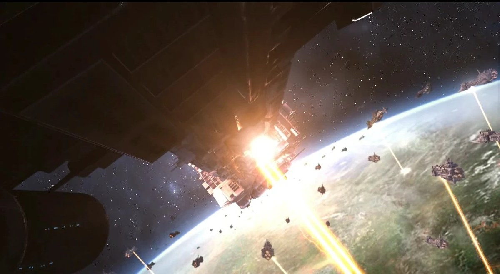

Exterminatus
| Exterminatus | |
|---|---|
| Sanctioned destruction of a world | |
 A world consumed by cyclonic fire after Exterminatus, from an Imperial Navy record | |
| Authorised by | Any full Inquisitor; the High Lords of Terra; senior commanders of the Imperial Navy, Astra Militarum and Adeptus Astartes |
| Carried out by | Warships of the Imperial Navy, the Inquisition or a Space Marine Chapter |
| Methods | Virus bombs, cyclonic torpedoes, orbital bombardment, other means |
| Result | World reclassified as a Dead world, Aptus Non |
| Notable instances | Isstvan III (005.M31), Tallarn (010.M31), Loki (c. 395.M41), worlds of Kryptman's Cordon (late M41) |
Exterminatus, in High Gothic, is the sanctioned destruction of all life on a planet by the forces of the Imperium of Mankind. It is the most extreme power the Imperium possesses and is used only when a world is judged to pose a threat to the Imperium that cannot be contained by any other means: when it has fallen to Chaos beyond recovery, when it is infested by Tyranids or genestealers, when a plague or mutation threatens to spread, or when the cost of retaking it would be greater than the Imperium can bear.[1][2]
The order may be given by a full Inquisitor on his own authority, by the High Lords of Terra, and by certain senior commanders of the Imperial armed forces, including some Chapter Masters of the Adeptus Astartes. Those who order it are expected to answer for the decision. An Inquisitor who is judged by his peers to have ordered an unnecessary Exterminatus may himself be declared a heretic.[1][3]
The act has been carried out many times in the Imperium's history, and the Administratum keeps records of the worlds destroyed. It was also used as a weapon of treason at the start of the Horus Heresy, when Horus ordered the virus-bombing of Isstvan III in 005.M31 to destroy the loyalists of four Legions.[4]
Methods
[edit]Most methods are delivered by warships from orbit. The choice depends on the nature of the world, the threat and the weapons available.[5]
Virus bombs
[edit]
Virus bombs release the life-eater virus, an engineered pathogen that destroys all organic matter it touches, reducing plants and animals alike to a flammable sludge. The gases released by the decay are then ignited, usually by a lance strike, and a firestorm sweeps the planet's surface. A virus-bombed world is left barren but its crust intact. Those sheltered deep underground may survive, as part of the population of Tallarn did when the Iron Warriors virus-bombed it in 010.M31.[4][6]
Cyclonic torpedoes
[edit]Cyclonic torpedoes are weapons of planetary destruction launched from orbit. They ignite the atmosphere or unleash plasma fire on a scale that burns away the air, boils the oceans and may crack the crust and destabilise the core. A more exotic two-stage weapon bores into the planet with a melta charge before detonating at its core; it is used against airless worlds such as Necron tomb worlds.[5]
Other methods
[edit]Simpler means include sustained orbital bombardment with nuclear or conventional weapons. During the Macharian Crusade (392–399.M41) Lord Solar Macharius had the tech-priests move the moon of the world of Loki into a new orbit with plasma drives so that its fall would devastate the planet. In 999.M41, during the Fall of Cadia, the Lord Castellan Ursarkar E. Creed ordered a generatorium on the prison world of St. Josmane's Hope to be overloaded when it was about to fall, destroying the planet.[2][7]

Authority and procedure
[edit]Exterminatus is never undertaken lightly, though Imperial doctrine accepts it as a necessary sacrifice. An Inquisitor has the absolute right to order it, and his authority is usually enough to command the warships of any Imperial fleet. Senior commanders of the Navy, the Astra Militarum and the Adeptus Astartes may also order it in war. In practice the order is often accompanied by evacuation of valuable persons, relics and archives, if time allows.[1][2]
The Inquisition reviews each instance. Some Inquisitors have been censured or condemned for orders judged excessive. The Inquisitor Kryptman ordered the destruction of a ring of worlds in the path of Hive Fleet Leviathan in the late 41st millennium, so that the Tyranids would find nothing to consume. The measure, known as Kryptman's Cordon, was condemned by his peers, though its supporters held that it saved many more worlds than it destroyed.[1][8]
Notable instances
[edit]| Date | World | Ordered by | Notes |
|---|---|---|---|
| 005.M31 | Isstvan III | Horus | Virus-bombing of the loyalists of four Legions; the opening atrocity of the Horus Heresy |
| 010.M31 | Tallarn | Iron Warriors | Virus-bombing of a populous world; survivors fought the Battle of Tallarn from underground shelters |
| c. 395.M41 | Loki | Macharius | Moon dropped on the planet[a] |
| Late M41 | Worlds of Kryptman's Cordon | Inquisitor Kryptman | Destroyed to starve Hive Fleet Leviathan |
| 999.M41 | St. Josmane's Hope | Ursarkar E. Creed | Generatorium overloaded to deny the world to Chaos |
Consequences
[edit]A world that has suffered Exterminatus is reclassified by the Administratum, usually as a Dead world, and removed from the tithe rolls. Some are recolonised after centuries. Tallarn, virus-bombed in 010.M31, became a desert world whose people later raised the Tallarn Desert Raiders. Others remain barren and are used as fortresses or bases.[9][6]
Imperial thinkers have debated the act. Some writers of the Ecclesiarchy hold that the destruction of a world without trial of its people is a sin; the Inquisition answers that it is the lesser evil when the alternative is the loss of a sector. In the Era Indomitus the scale of the wars against Chaos and the Tyranids has led Imperial commanders to order Exterminatus more often, and the records of the Indomitus Crusade list many worlds destroyed to deny them to the enemy.[10][11]
Timeline
[edit]| Date | Event |
|---|---|
| 005.M31 | Horus orders the virus-bombing of Isstvan III, destroying the loyalists of four Legions. |
| 010.M31 | The Iron Warriors virus-bomb Tallarn. Survivors sheltered underground fight the Battle of Tallarn. |
| 392–399.M41 | During the Macharian Crusade, Macharius has the moon of Loki moved into a new orbit to fall on the planet. |
| M37 | The Liber Ecclesiasticus records the Ecclesiarchy's objection to the destruction of worlds without trial. |
| c. 300.M41[b] | The memoirs of Gregor Eisenhorn record that Inquisitors are answerable to their peers for each Exterminatus they order. |
| 997.M41 | The Liber Classificatus Mundi is revised, recording the worlds that have been destroyed and reclassified. |
| c. 990.M41[c] | The Inquisitor Kryptman orders the destruction of a ring of worlds in the path of Hive Fleet Leviathan, Kryptman's Cordon. |
| 999.M41 | During the Fall of Cadia, the Lord Castellan Ursarkar E. Creed has the generatorium of St. Josmane's Hope overloaded to deny the world to Chaos. |
| c. 001.M42[d] | The Report on the Last Defence of Cadia is delivered to the Office of the Lord Commander. |
| c. 012.M42[e] | During the Indomitus Crusade, many worlds are destroyed to deny them to the enemy, and the scale of such orders grows. |
See also
[edit]Notes
[edit]- ^ Year estimated within the dates of the Macharian Crusade.
- ^ Estimated; no record gives an exact year. The memoirs are dated only to the 41st millennium.
- ^ Estimated; no record gives an exact year. Kryptman's Cordon is dated only to the late 41st millennium.
- ^ Estimated; no record gives an exact year.
- ^ Estimated; no record gives an exact year.
References
[edit]- ^ a b c d Ordo Malleus (sealed). Liber Daemonica, with Annexes on the Worlds of the Eye. Inquisition, Titan.
- ^ a b c Lexicanum Martialis. Officio Militaris.
- ^ Codex Imperialis (rev. 980.M41). Adeptus Terra.
- ^ a b Chronicles of the Heresy (sealed). Logos Historica Verita, Terra.
- ^ a b Battlefleet Solar (rev. 990.M41). Liber Navalis: Ordnance of the Fleet. Imperial Navy.
- ^ a b Liber Primarchus (M32, revised M41). Administratum Archive, Terra.
- ^ Officio Militaris (c. 001.M42). Report on the Last Defence of Cadia. Office of the Lord Commander (restricted).
- ^ Eisenhorn, Gregor (c. 300.M41). Memoirs of an Inquisitor. Ordo Xenos (sealed).
- ^ Administratum (rev. 997.M41). Liber Classificatus Mundi: Registry of the Worlds of Man. Administratum Archive, Terra.
- ^ Liber Ecclesiasticus (M37). Adeptus Ministorum.
- ^ Records of the Indomitus Crusade (ongoing). Office of the Lord Commander.